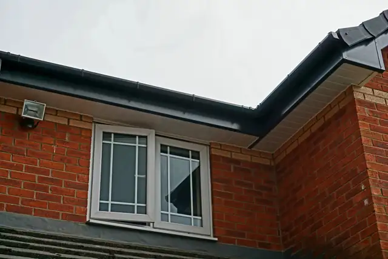
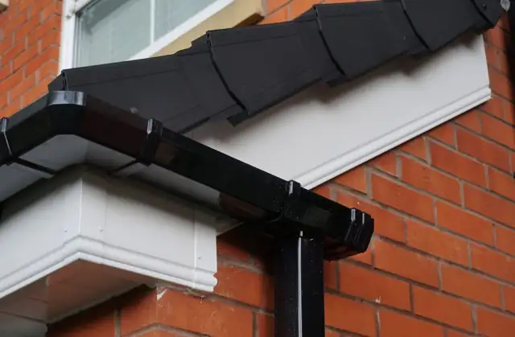

Water pouring over the front
A gutter that overflows in rain is blocked, sagging or too small for the roof it serves.

Services
New roofline, gutter repairs and replacements across the North West, so rainwater goes down the pipe and not down the wall.

Gutters, fascias and soffits carry water away and keep the ends of the rafters dry.
When they fail, the first signs are often on the brickwork: green streaks, damp patches and joints that overflow in heavy rain.
A gutter that overflows in rain is blocked, sagging or too small for the roof it serves.
Paint that will not stay on and timber that gives under a thumb mean water is getting behind.
A stain below a joint shows where the gutter has been leaking for some time.
Our work


Questions
Yes. Small repairs are welcome. If the rest of the run is close to failing we will show you, and you decide how far to go.
White and black are the most common, with other colours and woodgrain finishes available. We bring the options when we quote.
If a blocked gutter is the cause, clearing and re-aligning it is part of the repair.
Other services
Tell us the postcode and the job. Or call 07348 426709.